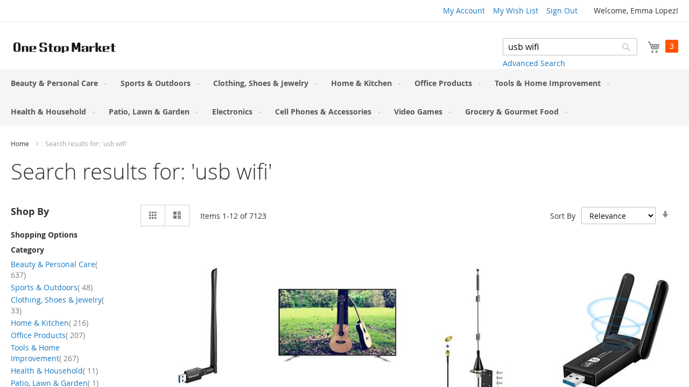

Reflexion
Retained reflectionMEMORY EXCERPT
KEY ACTIONS IN THE SECOND TRIAL
A UNIFIED SIMULATOR FOR AGENT MEMORY SYSTEMS
Does experience make your agent better?
VRL-Bench lets you find out through fair trial-and-error simulation.
ONE RECORDED TASK. TWO CONTINUATIONS.
i am looking for a grey sectional sofa for my living room
A fresh attempt, without reflection.
Unsolved through trial 6
Solved on trial 2; stopped
Selected WebShop case sample_0009 from the six-trial study. Annotated recorded actions, not a browser screenshot.
FROM ONE CASE TO A CONTROLLED COMPARISON
Across three models on MiniWoB and WebShop, leading memory methods improve success in some settings and reduce it in others. Fair trial budgets make these differences visible.

Read the findings and experimental settings
EXPLORATION & EXPLOITATION
Retained experience can guide an agent—and displace useful exploration. Reflection-exposure experiments revealed this tension in verbal reinforcement learning.
Control experience exposure with the Replay gate, or study an integrated scheduler such as VEX².
Explore the exposure experiments ↗
A FAIR PLACE TO STUDY AGENT MEMORY
In verbal reinforcement learning, an agent turns interaction feedback into language-based experience for later attempts. VRL-Bench provides a common simulation workflow for developing and comparing these memory systems.
Keep actors, task cases, reset rules, trial budgets, and interaction limits consistent while changing the memory method.
Inspect what reaches the next trial, what the agent does, and how it uses its remaining opportunities.
Measure success, recovery, and trials to solve. Use paired intervals, exact tests, and conditional power to interpret comparisons.

LOOK INSIDE A RUN
Step through a real WebArena recording, with native page snapshots, the actual memory supplied to the actor, and both trial and action budgets.
Reflexion · GPT-4.1 · 6-trial budget
Two trials recorded; stopped after success.

type [337] [usb wifi] [1]Trial 2 · Action 1BUILD ON A COMMON FOUNDATION
Use a reference method, connect your own implementation, and improve it from task-level feedback. Compare a new version with the previous one under the same conditions.
* Adapted to failure-only trial and error. Memory-free Retry is included as a common exploration baseline.
Run memory-free Retry on your tasks.
Evaluate the complete implementation.
Compare each candidate with its predecessor.
Choose an environment, configure the model, and explicitly set your trial and action limits.
Get startedvrlbench simulate --config examples/configs/webshop_retry.json
vrlbench simulate --config examples/configs/webshop_reflexion.json
vrlbench replay runs/webshop_reflexion
vrlbench compare runs/webshop_retry runs/webshop_reflexionSimulations call your configured model. Saved-run replay makes no model calls.